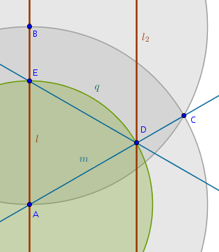
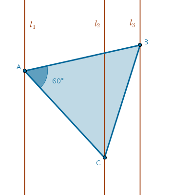
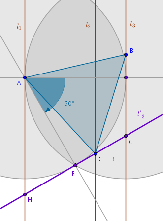
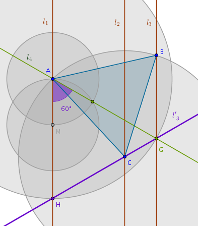
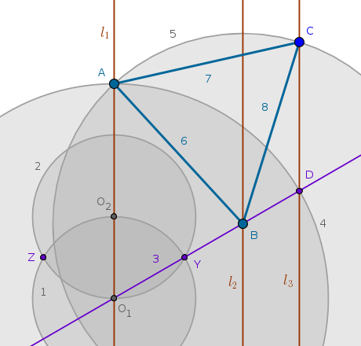
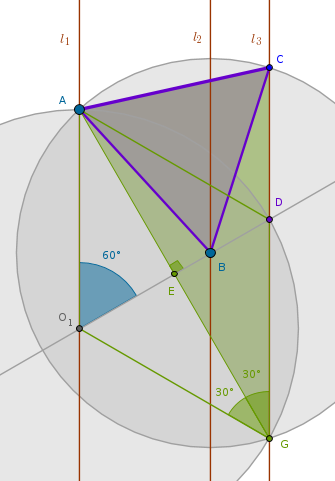
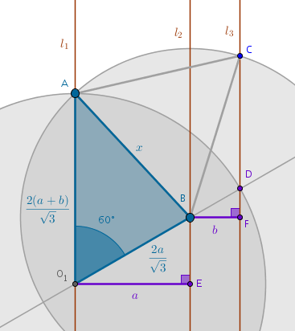

Between the Lines or Circles, Circles Everywhere ...
This section is a continuation of the previously solved problem of constructing an equilateral triangle on three given arbitrary parallel straight lines. The question we pose this time is whether it is possible to solve this problem with the number of steps fewer than eleven - a number of construction steps required to construct an equilateral triangle in question based in two-circle invariant discovered in Ruler and Compass Constructions 03 section.
Problem
construct an equilateral triangle on three given parallel straight lines in less than eleven steps
Process
Where can we find the savings? Which lines are expensive? The hunch is that the perpendiculars cost a lot - three steps. How can we get rid of them? For some reason we are leaning towards the simpler version of our two-parallel limiting case construction from Ruler and Compass Constructions 03:
The more complicated construction with the perpendiculars took ten steps to accomplish while the simpler construction cut that number in half. May be there is something there?
OK, so let us use the reverse order approach and assume for a moment that we have constructed an equilateral triangle somehow not on two but on all three parallel straight lines, possibly using the method that we have described in the previous chapter. How can we go about it in a different way keeping in mind the equilateral triangle constructed on two parallel straight lines?
Now that the problem has been solved via one method a different idea comes to mind. This is an equilateral triangle - the angles at all of its vertexes are sixty degrees. The point \(B\) is sixty degrees apart from the point \(C\) relative to the point \(A\). We picked \(A\) on \(l_1\) at random. If we knew the exact location of \(B\) on \(l_3\) than to locate \(C\) on \(l_2\) all we have to do is construct a sixty-degree angle with one of its legs on the straight line passing through \(A\) and \(B\) which amounts to rotating \(B\) about \(A\) clockwise. So here is the new approach:
in general - motion, specifically - rotation
However, we do not know where exactly on \(l_3\) the point \(B\) is. We can not rotate what we do not have but we can rotate what we do have - the entire line \(l_3\). Rotating \(l_3\) about \(A\) is rather costly - it will take two perpendiculars which is six steps. To finish the construction we would need another straight line, seven steps. Plus two more circles, nine steps in total. Where would that take us?
The straight line \(l'_3\) is the image of the straight line \(l_3\) rotated about \(A\) sixty degrees clockwise. \(l'_3\) intersects all three given parallel straight lines at \(G, C\) and \(H\). Since the straight line \(l_3\) is rotated sixty degrees, every point on \(l_3\) is rotated sixty degrees which means that, working in reverse order, the points \(G, C\) and \(H\) are the images of some currently invisible points on \(l_3\) prior to its rotation.
It follows now that if \(A\) is picked at random on \(l_1\) and \(l_3\) is rotated about \(A\) sixty degrees clockwise previously invisible \(B\) becomes visible on \(l_2\) as \(C\) in nine steps.
We have obtained three points: \(G, C, H\). What if we start with a sixty-degree line like \(l'_3\)? That will cost us three steps. The point \(C\) now looks attractive. What if we claim that \(C\) is one vertex of the future equilateral triangle? Then we will need to locate \(A\) and \(B\) in a cheap way. How?
What other easy lines can we build? We can construct a straight line passing through \(A\) and \(F\) but that would just repeat out previous construction - no gain here.
What about a straight line through \(A\) that is inclined sixty degrees with respect to \(l_1\)?
Now this becomes interesting:
$$l_4 \cap l_3 \cap l'_3 = G$$Aha! It looks like we have found another invariant:
an equilateral triangle constructed on two outer parallel straight lines locates two vertexes of the equilateral triangle sought-after of which one vertex is located on the inner parallel straight line
In our particular case \(\triangle AGH\) constructed on two outer parallel straight lines locates the vertexes \(A\) and \(C\) of the equilateral triangle sought-after.
To locate the remaining vertex \(B\) on \(l_3\) all we have to do is construct the circle with a center at \(A\) and a radius \(AC\).
In summary, if we pick a point \(A\) on \(l_1\) at random then it would take three steps to construct \(l_4\) to locate \(G\) on \(l_3\).
To locate \(C\) we first construct a \(Circle(A, AG)\) to locate \(H\), one step, and then we construct a straight line through \(G\) and \(H\), one more step for a running total of five steps.
To locate \(B\) we construct a \(Circle(C, CA)\) until intersects \(l_3\), one step, plus three more steps for three line segments connecting \(A, B, C\) to finish the construction in nine steps.
But we can also begin the construction with the points \(H\) or \(G\). What will the total cost of construction be then?
Beginning the construction at \(H\) costs us eight steps. Using \(G\) as the starting point seems to be equivalent. It looks like locating \(C\) early on shaves one step off the overall budget. We claim the last construction to be the winner:
$$O_1, O_2 \in l_1$$ $$Circle(O_1, O_1O_2)$$ $$Circle(O_2, O_2O_1) \cap Circle(O_1, O_1O_2) = Y, Z$$ $$Line(O_1, Y) \cap l_2 = B, l_3 = D$$ $$Circle(O_1, O_1D) \cap l_1 = A$$ $$Circle(B, BA) \cap l_3 = C$$ $$Line(A, B)$$ $$Line(B, C)$$ $$Line(C, A)$$ $$\triangle ABC \; \colon \quad AB = AC = BC$$
Conclusions
- it took me about thirty minutes of GeoGebra tinkering to work out this solution. The straight line through \(A\) and \(G\) is what made everything fall into place
- why did I not see all of that the first time around? The very first solution is rarely optimal
- what still remains not clear is where exactly did the winning hunch come from? It feels like there is no purely logical way about these hunches whatsoever even though my exploration of limiting cases in Ruler and Compass Constructions 03, eventually, paid off
- lastly, as I was looking at \(l'_3\) I realized that as the inner parallel straight line bounces back and forth between the fixed outer parallel straight lines the path that the vertex \(C\) traces is the straight line \(l'_3\) if we fix \(A\) and let \(B\) slide up and down \(l_2\)
Proof
The idea of the proof that the above construction does indeed result in an equilateral triangle is based on B3P20, the angle at the center of the circle is double the corresponding angle at the circumference. In our case:
$$\angle ABC = 2 \times \angle AGC = 2 \times 30^{\circ} = 60^{\circ}$$The proof is rather tedious but easy:
By construction:
$$O_1A = O_1D$$ $$\angle AO_1D = 60^{\circ}$$Since \(\triangle AO_1D\) is isosceles, from B1P5 it follows that:
$$\angle O_1AD = \angle O_1DA = x$$and from B1P32 it follows that:
$$2x = 180^{\circ} - 60^{\circ} = 120^{\circ}$$ $$x = 60^{\circ}$$and from B1P6 it follows that:
$$O_1A = O_1D = AD$$which means that \(\triangle AO_1D\) is equilateral. Next, we have a straight line passing through \(O_1\) and \(D\) falling on two straight parallel lines \(l_1\) and \(l_3\). From B1P29 it follows that:
$$\angle AO_1D = GDO_1 = 60^{\circ}$$and since, by construction:
$$O_1D = O_1G$$then, in similar manner, we prove that \(\triangle DO_1G\) is equilateral. Next, consider two isosceles triangles: \(\triangle ADG\) and \(\triangle AO_1G\). We have already proved that its corresponding sides are equal and, by construction, the side \(AG\) is shared. By AAA these triangles are congruent which means that its corresponding interior angles must be equal:
$$\angle O_1GA = \angle DGA$$which means that, since \(\angle O_1GD\) is sixty degrees:
$$\angle O_1GA = \angle DGA = 30^{\circ}$$which, in turn, means that all the angles at the vertex \(E\) are right. Further, by ASA \(\triangle O_1EA\) and \(\triangle O_1EG\) are congruent and hence:
$$EA = EG$$Lastly, consider two right triangles: \(\triangle BEA\) and \(\triangle BEG\). By SAS they are congruent and hence:
$$BA = BG$$where the side \(BG\) is not shown to avoid the clutter. By construction:
$$BA = BC$$and hence:
$$BA = BC = BG$$proving that the point \(G\) belongs to the circumference of \(Circle(B, BA)\) which means that B3P20 is applicable to the central \(\angle ABC\) and the angle on the circumference \(\angle AGC\) both of which subtend the same arc:
$$\angle ABC = 2 \times \angle AGC = 2 \times 30^{\circ} = 60^{\circ}$$We now have, by construction:
$$BA = BC$$which means that \(\triangle ABC\) is isosceles. Since:
$$\angle ABC = 60^{\circ}$$from B1P6 and B1P32 it follows that:
$$BA = BC = CA$$rendering \(\triangle ABC\) equilateral.
Analytic Solution
In conclusion we seek an analytic solution for the length of the side of the equilateral triangle as a function of distances \(a\) and \(b\) between the the given parallel straight lines.
Using the construction of this chapter it is possible to find that function in one line using the law of cosines:
We observe that since the angle \(AO_1D\) is sixty degrees by construction, the length of the line segments \(O_1D = O_1A\) is known:
$$O_1A = O_1D = O_1B + BD =$$ $$\frac {2a}{\sqrt{3}} + \frac {2b}{\sqrt{3}} =$$ $$\frac {2(a + b)}{\sqrt{3}}$$Consider the triangle \(O_1AB\) in which the two sides and the included angle are known and, hence, from the law of cosines, we have:
$$x^2 = O_1B^2 + O_1A^2 - 2\times O_1B \times O_1A \times \cos 60^{\circ} =$$ $$\frac {4a^2}{3} + \frac {4(a + b)^2}{3} - \frac {4a(a + b)}{3} =$$ $$\frac {4(a^2 + ab + b^2)}{3} $$from where:
$$\bbox[#e8e8e8,3pt]{x_{1,2}(a, b) = \pm \frac {2}{\sqrt{3}} \sqrt{a^2 + ab + b^2}}$$\(\blacksquare\)